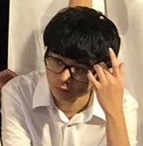
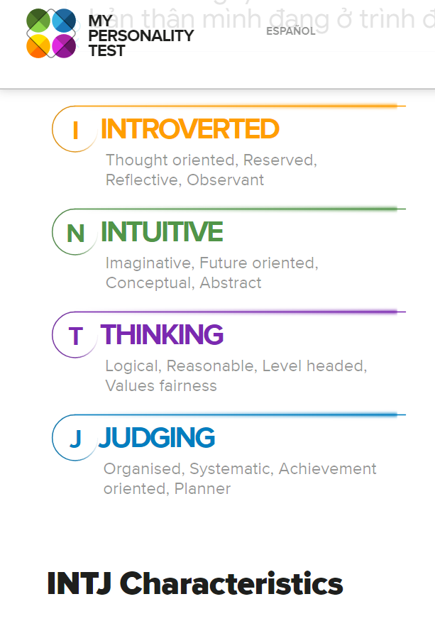
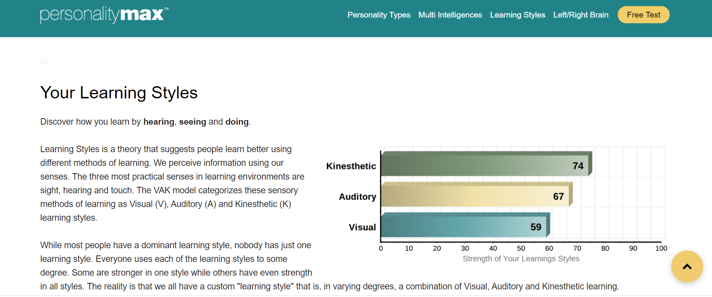
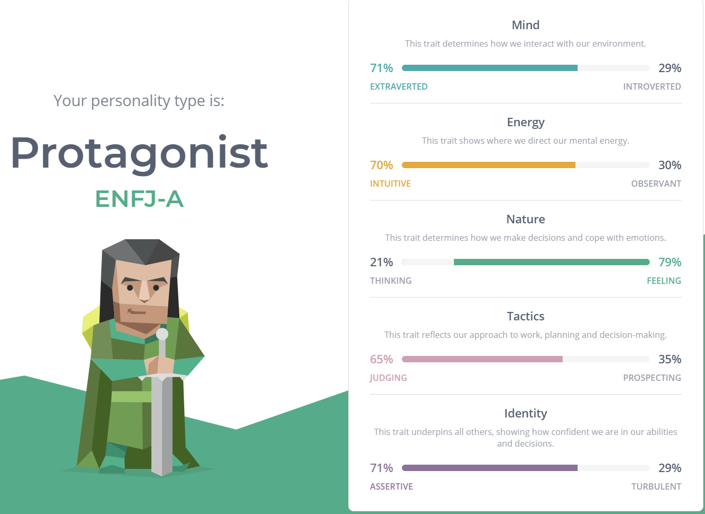
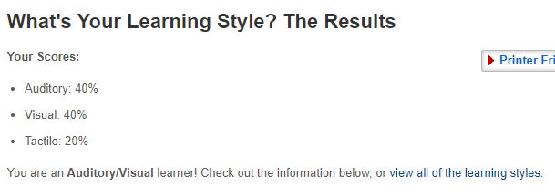
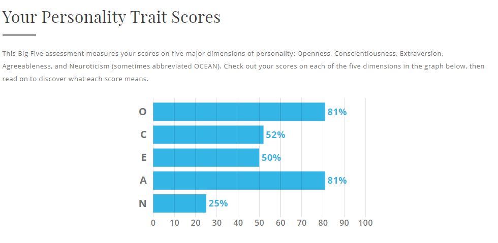
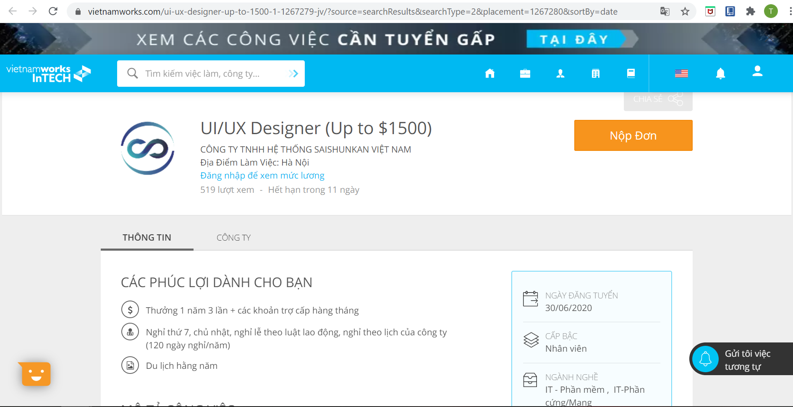

1. Team Name: KOVI Campainer
KOVI Campaigner is our team name. It sounds like COVID, right? But the meaning is not, it is so sensitive to put the name with a pandemic which is a darn for the population. KOVI stands for Korean and Vietnamese members in our team, we have a Korean and 3 Vietnamese students. Not mentioned in the first part, we come up with Project Idea as Campaign A - a system can help not only students but also RMIT University and the government ensure healthcare for individuals. This project has to be conducted as a priority by us (Tae, Thinh, Trang and Khanh). We are the young generation with creative thinking and well-rounded in the IT (Information technology) field which can contribute to spread out the potential technologies to help the world in the hardest term - COVID 19 as campaigners.
2. Personal Information:
- - Trang:
- - Khanh:

My name is Ngo Nhat Khanh, and my student number is s3818414. Through-out 12 years of education in bilingual schools, I am able to use both Vietnamese and English competently. I’ve moved to different schools a few times: starting from AIS, then VAS, I spent a year in BCIS after finishing primary school in VAS but I ended up returning to VAS after just one year in BCIS and finished high school there, in VAS. I usually play games in my free time, I mostly play Dota 2 with my best friends, but there are times we’d just play other fun online co-op games. I also participate in the badminton club in RMIT when the club is available on certain days of the week. I have always been a video game enthusiast, which means I am very into learning about game development, as well as graphics design in video games. The process of creating a high-quality game has always been thrilling to me. I have little experience with web programming and creating games as I have learned these during secondary school but never got to learn about them again in the later years and up until now, so my skills are very rusty at the moment.
- - Taehyeon:

My name is Taehyeon Jeong (s3799019) and I am from a maritime city in the southeast part of Korea called Ulsan. The city is famous for sunrise but if you want to travel in Korea, I don't want to recommend Ulsan for tourists. I am currently living as a pescatarian, so I eat everything but meat. And I can speak 3 languages which are Korean, English, and tiny bit of Vietnamese. I am learning Vietnamese. Welcome to initiate a conversation in these three languages! Running is my favorite activity. It always refreshes me when I am stuck in problems and worries. In my free time, I enjoy trekking and indoor climbing as well. I want to experience more in Vietnam if I have a chance. I am also inclined towards creative activities such as photography and music. I learned Korean traditional instruments and used to play the piano and guitar. I enjoy playing these as a hobby. I also used to take pictures so check out my photography album if you want! -> http://juta.creatorlink.net/
Today we live in an era of excessive information. Higher accessibility from handy devices as if smartphone and lab tap let people obtain various information. But the information gap still existed. Older people and people with disabilities are having trouble using digital devices. For example, self-service kiosks are often unclear and not friendly for older people and people with disabilities. Therefore, the majority of them need help from others or rather do not use it. Being unable to use digital technology might lead to an information gap and opportunity gap further economic gap. It affects not the only inconvenience in daily life but also worse the quality of life. I want to help them by developing programs to bridge the gap. To do that, I thought understanding and having knowledge is critical and should be first. As a result, my interest was headed to Information technology. Through this course, I want to take overall understanding in IT and hope it helps to choose the specific direction.
My biggest interest in IT is AI technology. Amongst the AI field, deep learning using big data technology is the most interesting part for me. Deep learning technology that computers train themselves without human effort to find and classify patterns in objects or pictures can be used in almost every field including bio, medical, finance, communication. Big enterprises such as Facebook, Twitter, and Google already offer real services by utilizing big data. And one day I want to develop a sign language translation program that recognizes and interprets sign language motion without the real person. Also want to develop a program and product that recognize the objects and let blind people hear by sound instead of their sight by using this technology.
The reason why I choose to come to RMIT is because I thought studying at RMIT is an opportunity to enhance my competitiveness. RMIT provides students a lot of experience associated with real IT fields so that students are offered practical assistance when they work in the future. Also, I think it is possible to expand my language because I can learn and use English and Vietnamese while studying in RMIT Vietnam. I think Learning new languages and living in an unfamiliar place allows us to think in a different way and it influences our view towards the world.
- - Thinh:
My name is Huynh Hung Thinh, mine ID is s3750559. My nationality is Vietnamese. In my free time, I love playing games, listening to music, playing chess or watching movies. About career interests, I love learning about AI, autonomous technology and machine learning. I also have some experience in arduino and working with python. Back when I was at high school, I was lucky enough to have a ticket to a tech talk and the topic was "How to learn AI as a beginner", the event was organized by TopDev and it was fascinating and so curious to know what AI can do in our life. And that event sparked my inspiration to become a software developer. I realized that there are so many things I can do with a computer and a lab, I can create many apps which improve our daily lives. And it would be greater if I can apply AI and machine learning, which I know it really requires a very advanced amount of knowledge to fully understand about it. But overall, becoming a software developer has always been my dream, and I will surely work hard for what I have been dreaming abou
My name is Pham Hoai Mai Trang, s3836323 is my student number and absolutely it is used for my email account s3836323@rmit.edu.vn. My nationality is Vietnamese but I am not Saigonese. I am from Vung Tau city, which is more tranquil than Ho Chi Minh city because of the beach. It is over one kilometer from Saigon to my hometown and takes an hour and a half to move. An introverted character describes me a lot not only in every relationship. But if this environment requires me to affiliate with teammates, I can balance my energy, my mood following specific situations, and after that I will return my original version of myself. About my hobbies, I spend most of my time practicing guitar and connecting with my intuition. The most valuable lesson I remind myself is your value is defined via your enlightenment and your personality in any circumstance. Honestly, I do not have the entire background about IT (Information Technology), but I am interested in Turtlebot which is a low-cost individual robot developed by Melonee Wise and Tully Foote in 2010. I took inspiration from high school when I took part in an automatic technology competition.
3. Team Profile:
- - Trang:  
- - Khanh:
- MBTI

Learning style

Big Five Personality

These personality tests’ results have helped me to have even a better understanding about myself, although there are some statements that are not exactly true but most of the remaining ones describe me very accurately. Not only that, they also give me hypothetical advice when there are situations I don't usually think about. As for the learning style test, I am still unsure about the results because I have always noticed that whenever I learn there is always the combination of reading, listening, and a bit of me distracting myself by doing literally anything that I feel like it's fun. But then again, all of these tests were super helpful for me, and there are advice I would definitely take in heart to avoid any possible conflict when working in a team.
- - Taehyeon:
- MBTI


Mediator type of persons do not try to achieve many things at once and pay attention to only one goal. For me it is kind of true because when I do something, I can only concentrate on one task. I cannot simultaneously do many tasks at once. So, I will only focus on the group project after the team project is started. And as a person of mediator type, I am able to coordinate each other's positions well within the team when the arguments or conflict occurs.
- Learning Style

I learn better through visual and tactile learning than by auditory learning. The result saying that you may be easily distracted by sounds is really accurate. I cannot easily concentrate on my work in noisy places so that my favorite work/study place is library or quite cafe. However, since learning cannot be executed in just one style, I want to study with contrasting team members with different learning styles and experience and develop different styles of learning.
- Big Five Personality

The big 5 personality result showed that the highest score is in openness, I agree that I tend to be inquisitive and open to new things. This personality would help to conceive creative and adventurous ideas in the project. On the other hand, Conscientiousness was the lowest at 33%. I should put my effort into strengthening my self-discipline. I will try to make up the deficiencies in these five characteristics and hope I can help the team project.
- - Thinh:
- MBTI
- Big 5 Personalities

- Learning style
In my opinion, these test results tell me that I can work imaginatively and creatively, also I can synergy well with other people in a team. I also can learn very well and fast if I learn it by doing it or seeing it, which will make my brain memorize it quickly and longer. My imaginative and creative mind can give out many ideas that are useful in real life, but to make them become applications, I need myself to be realistic. Also, taking good notes whenever I discuss with my teammates is very necessary for me as I am going to visualize what I heard and what I wrote down to remember longer than usual. Sometimes I categorize my notes with different colors or use different methods to take notes as well. Although I work best with my visual intelligence, I still need to avoid as many distractions during my study time as possible as I do not work well even if my mind slightly goes off. More about me is that if I work as a member of a team, I am a very easy going person towards other members, also a kind and patient one. I see myself as someone who can sympathize with other people. It does not challenge me at all when there is an argument in our team, I believe I can be fair and decisive to give out the right decision, show my perspective to others and prove the points to them. I think that I don't have problems with befriending, I can be a good friend and remain in a good relationship with other people; when the connection is strong enough among me and my teammates, I think that will make a great working environment for everyone. Moreover, I am an open-minded person, I like listening to other people's opinions to shape and sharpen my way of thinking. I will take any comment or creative thoughts seriously and think of it carefully before I respond to the speaker. I can say that my teammates can feel free to share with me their opinions as I can listen well and consider whether I should respond yet. Also, I care for my teammates, I will be there when they need my help and offer them my assistance. On the other hand, I am quite an introverted person, I have problems with starting a conversation and keeping things going on the first and second time getting to know a new person. I am working on getting over it, and there have been improvements and it should no longer be my weakness soon.
4. Ideal Jobs:
- - Trang:
- - Khanh:
Game Development Engineer
Cygames is looking for additional game development engineers to expand their business. The specific work content for this position: Design/development/test/operation of high-end games and libraries ; Plan feasibility, able to develop proposals and improvement plans ; Research and development of new functions. The position seems usual compared to other companies in the gaming industry but it’s actually very appealing to me because I’d get to work as a game development engineer in the company that made the gacha game (Granblue Fantasy) that I enjoy playing so much and I would love to contribute to Cygames in improving their games and work on future projects.
- - Taehyeon:
Information Technology Specialist

http://http://bitly.kr/LHwQ7QlfdOy
This job position appeals to me because the overall skills in IT as if network, security, application development, active directory are applied to the job. IT skills would be developed and expanded through the Information Technology specialist position. Also, the biopharmaceutical company, Celltrion Healthcare has high potential for development in this era. Therefore, self-development and advancement about IT are attainable. But looking at the responsibilities of this position, the task of this position is not only the overall skills in IT but also to develop strategies, analyze for efficient performance, and design solutions for business. It is an expert position for the person who already has considerable experience in the IT field rather than actual projects or applications developers. Therefore, critical abilities for the job are business analysis and establishing IT strategy, and communication such as negotiation, relationship and project management, presentation, and collaboration skills. Interpersonal skill to work with many architects and businesses is also indispensable.
Unfortunately, I am not adequate to apply for the IT specialist position right now. I do not have any practical experiences and career in IT field or any IT certifications. It is required at least 5 years IT experience and professional business skills. Thus, I should build my IT experience through work in practical business at first. I will establish the overall Information technology knowledge and experience in the real work industry applying for an internship during the university years, and I will take communication classes in business and management major on elective courses.
And the applicants who have certification as if ITIL (Information Technology Infrastructure Library), PMP (Project Management Professional), CISA (Certified Information System Auditor) are preferred for the job. ITIL stands for Information Technology Infrastructure Library and it is de-facto standards of IT service management. Firstly, I will apply for the ITIL Foundation certification test which does not require any qualification for examination during the school years. Qualification of examination of PMP and CISA for bachelor graduates, more than 3 years of PM (project management) and 5 years of IS (Information System) hands on experience, respectively. In addition, 35 hours of PM education and passing the CISA exam are prerequisites to get the certifications. Therefore, I will learn more about the certification detail and get it after hands on work experience.
Celltrion is a multinational company. Most businesses are conducted overseas including the U.S., Europe. 30% of employees are international and most communication is conducted in English, speaking and writing for business is critical. I felt my English was inadequate for the job. I will use my time to intensify the English studies to improve business English skills progressively with getting certifications
- - Thinh:
Software Development Engineer
This position requires designing and writing code to manipulate many applications, also working with a variety of software components as well as hardware. Moreover, being an engineer means you also need a good understanding and knowledge of operating systems, multicore embedded software and other subjects such as mathematics. Additionally, this is my ideal job and Intel is the company that I am looking forward to working there. I would like to contribute my knowledge and technical skills to work there.
Through these tests, I am a person who can get along with my teammates well, I usually attempt a reconciliation between the two contrasting sides. Moreover, most of the situations I will have an observation, conscious thought to put ideas into action. Individually, rich experiences will persuade me more effectively than unrealistic ideas, but, sometimes I tend to work individually because of procrastination. Anyways, group activity is not a challenge if I have a supportive teammate.
Designer
Saishunkan company has posted online recruitment about Designer Position. It requires JavaScript, Graphic Design, HTML5, UI Frameworks, UX skills. Besides that, this position requests soft skills to carry out customers’ analysis to have specific distribution that has efficient methods for the company. The perks of the job have benevolent allowances, especially Japanese language; overtime pay and holidays, events per month. This position appeals to me because it relates to art and I am willing to work with various characteristics. About my career plan, I pay attent to design skills like Graphic Design, Flat Drawing, UE (User Experience) and UI ( User Interface) as Graphic Design.